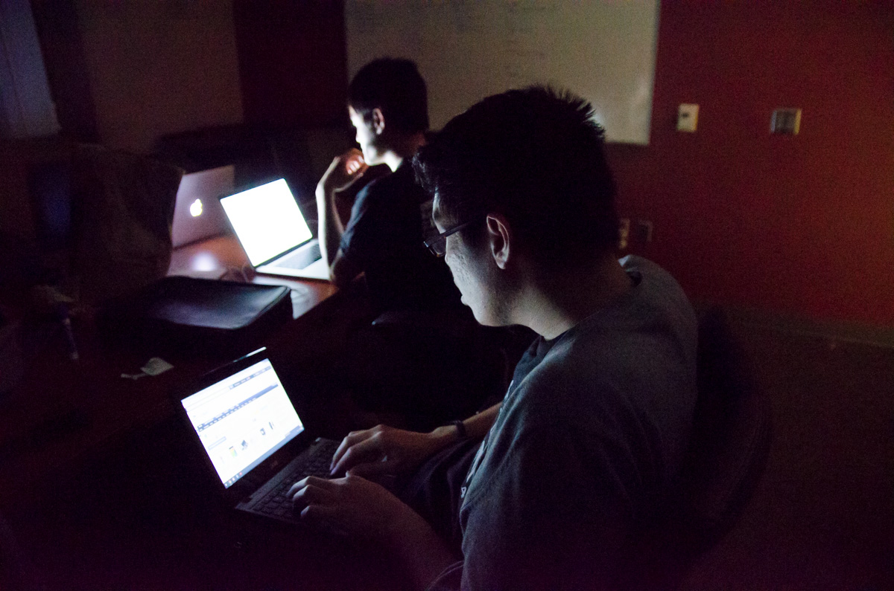
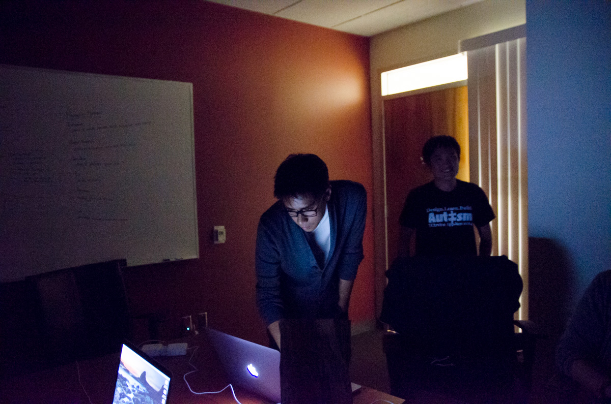

Give you all of me
April 21th 2014
(Quote of the day: I have all these ideas that I have to get down before I lose them - by Kevin)
 Jack Ma, what are you doing in the darkness
Jack Ma, what are you doing in the darkness
We gave all of us to this competition. Most of us stayed up late to code, to design, to blog and to joke. Just as the song sings "even when you are crying, you are beautiful, too," we feel the same for our group. Even when we lack sleeping, we are happy,too. Everyone's contribution to the team is as moving as the unconditional love behind the lyric "I gave you all of me."
Jack Ma, what are you doing in the darkness
Our famous photographer Kenny's innocent smile

Focused and long neck James while working

Our another famous photographer Kevin is so cool no mater what
We turned off the light when we wrote our script for video. I orignally thought that a dark environment might help us think better. However, it turned out to be a perfect time for taking photos. By the way, I was so happy to know that we should prounounce Vietnamese food "fur" like asking a question!
{kind=link}
{kind=link}
{kind=link}